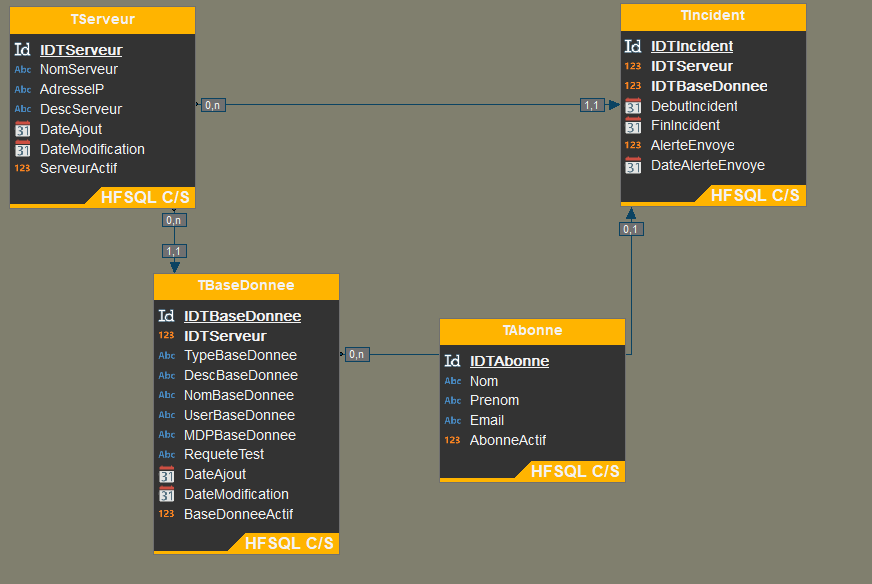
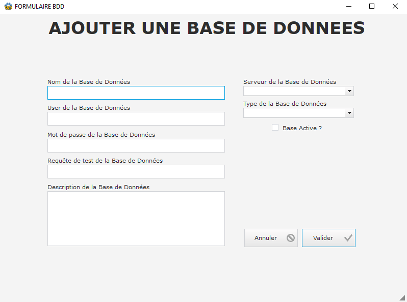
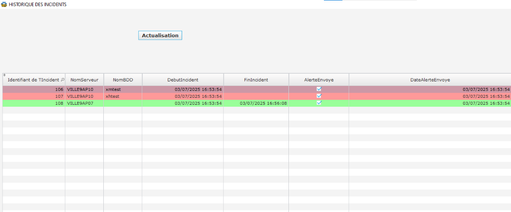

Contexte du stage
Ce projet a été réalisé dans le cadre de mon stage de première année de BTS SIO, au sein de l'entreprise Gestion DS située à Villeneuve-Saint-Georges. L'entreprise avait besoin d'un outil interne fiable pour surveiller l'état de ses bases de données et de ses serveurs critiques afin de réagir rapidement en cas de panne.
Missions et réalisations
- Analyse des besoins : Comprendre les attentes de l'équipe technique concernant les alertes et les métriques à surveiller.
- Création de l'application : Développer une solution logicielle capable de "pinger" et d'interroger régulièrement les serveurs et les bases de données.
- Système d'alerting : Implémenter l'envoi automatisé de rapports d'incidents (par e-mail ou notifications) dès qu'une anomalie est détectée.
- Tests et déploiement : S'assurer de la fiabilité de l'outil dans un environnement de test avant son utilisation en production.
Aperçu de l'application
Schéma de la base de données interne conçue via l'éditeur d'analyse pour stocker les informations des serveurs, des bases et des incidents.

Ce formulaire permet d'ajouter facilement une nouvelle base de données à surveiller en renseignant ses identifiants de connexion et sa requête de test personnalisée.

Tableau de bord dynamique qui répertorie en temps réel l'ensemble des pannes détectées au cours des phases de vérification et de surveillance.

Technologies utilisées

WINDEV 23
Environnement de développement (AGL) utilisé pour la conception de l'ensemble de l'interface et de la base de données.
WLangage
Langage de programmation principal du projet pour la logique métier et les requêtes (fonctions, procédures).

HFSQL
Création du dictionnaire de données et requêtes SQL pour interroger et tester la disponibilité des bases reliées.
Réseau & SMTP
Commandes de ping (ICMP) pour surveiller les serveurs et envoi d'emails automatiques via un serveur SMTP interne.